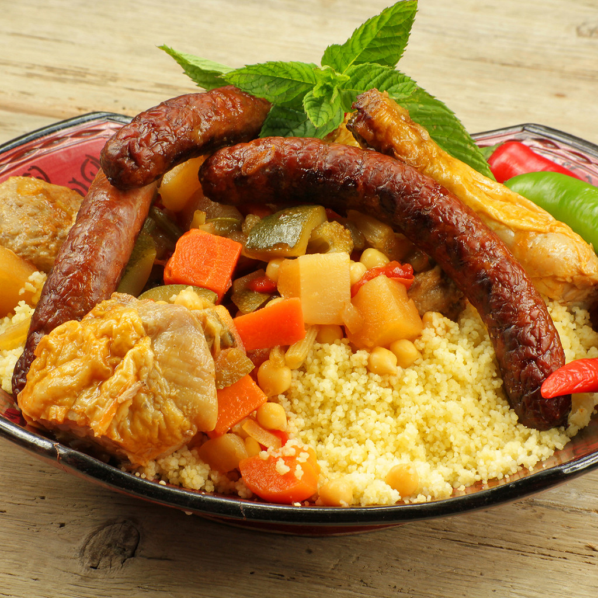

Main Page
Couscous

The royal couscous
A signature dish of Middle Eastern cuisine, couscous dates back to the 3rd century BC! While its accompaniments vary according to local customs, its base remains unchanged: wheat semolina and a spicy vegetable stew, traditionally cooked with a single type of meat. However, it is couscous royal (combining merguez sausage, lamb, and chicken) that has conquered our Western palates! Travel to North Africa for a meal with this flavorful recipe.
Ingredients
- Couscous (medium) - 1 kilogram
- Boneless lamb shoulder - 1 kilogram
- Chicken - 1 kilogram
- Merguez sausages - 12
- Chickpeas - 2 cups
- Zucchini - 4
- Carrots - 4
- Turnips - 2
- Eggplant - 2
- Ripe tomatoes - 3
- Onions - 1
- Raisins - 150 grams
- Smen - 3 tablespoons
- Tomato paste - 2 tablespoons
- Ras el-hanout - 3 teaspoons
- Paprika - 1 teaspoon
- Flat-leaf parsley - 5 springs
- Harissa - 1 pinch
- Olive oil - 1 cup
- Salt - 1 pinch
- Pepper - 1 pinch
Steps
- Prepare the meat
: Cut the chicken into pieces (thighs, breasts, and wings) and the lamb shoulder into fairly large cubes. In the bottom of the couscous pot, brown them over high heat for 5 to 10 minutes in olive oil. Add the smen, meat, and chopped onion to a large casserole dish or tagine. Add the couscous spices, salt, and pepper.
- Pre-cooking with tomatoes
: Pour in the tomato purée and fresh tomatoes, cover with water, stir and simmer for 15 minutes over low heat. Peel the carrots and turnips. Cut the eggplants and carrots into sticks, the turnips into quarters and the zucchini into chunks. Soak the raisins in a bowl of hot water.
- Cooking the vegetables and finishing the broth
: Add the vegetables, parsley, and spices (you can add 1 stalk of celery, 1 bunch of parsley, and 1 bouquet garni) and fill with water. Bring back to a boil, cover, and continue cooking for 45 minutes to 1 hour at a gentle boil. Five minutes before the end, add the chickpeas and drained raisins.
- Preparation of the semolina and merguez sausages: Prepare the semolina according to the instructions on the packet and stir in small pieces of butter using a fork to separate the grains. Fry the merguez sausages in a pan.
- Plating and serving
: The couscous, meat, cooked vegetables, and sauce will be served in separate dishes. For example, arrange the couscous in a dome shape on a large platter and place the merguez sausages on top in a star pattern. Using a slotted spoon, remove the vegetables and meats and arrange them in two separate bowls. Pour the broth into a tureen. Take a ladleful to dilute the harissa.